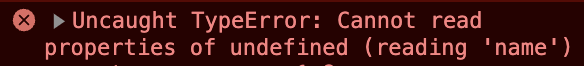
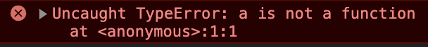
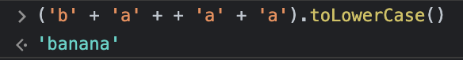
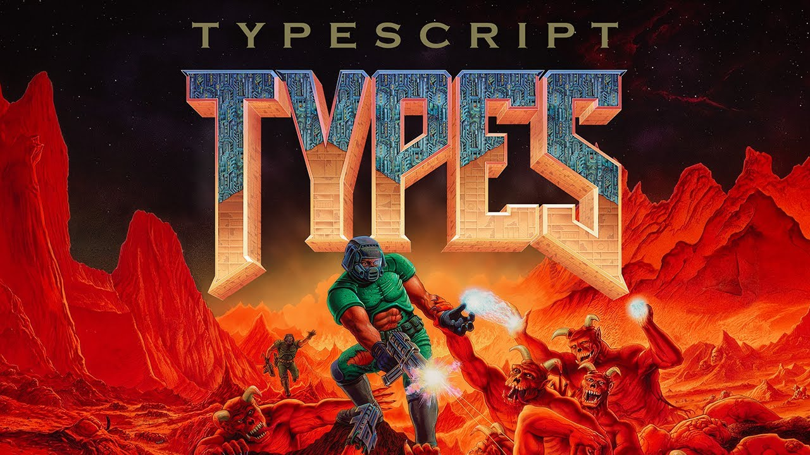
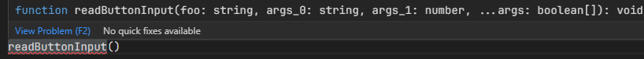

Александр Балбеков
Что мы сегодня узнаем
- Кто такой этот ваш Typescript?
- Почему он хорош?
- Как понять его типы и не сойти с ума?
- Есть ли в нём что-то КРОМЕ типов?
- Альтернативы
- Где может применяться вся эта красота вне рамок веба?
Typescript это кто?
TypeScript - это статически типизированный язык программирования от Microsoft который компилируется в JavaScript. Рождён на свет в 2012-м году
Проще говоря - это надмножество JS которое добавляет в язык типы(и не только).
Почему TypeScript это круто?
Он типизированный!
function transformToLowerCase(name) {
return name.toLowerCase()
}
transformToLowerCase(1) // JS -> ошибка в рантайме
function transformToLowerCase(name: string) {
return name.toLowerCase()
}
transformToLowerCase(1) // TS -> ошибка до выполнения кода
- Крутой autocomplete
- Не надо держать в голове всю кодовую базу
- Код самодокументируется
Он типизированный!
const age = 12;
age.length; // JS -> будет ошибка в рантайме
age.length; // TS -> Property 'length' does not exist on type '12'.
3 всадника JS-апокалипсиса



Почему типы помогают читать код
const doSomethingLongAndNotTrivial = (params) => {
const children = getDeepPropertyById(params.parent);
// ...200 строк кода...
return children; // Кто-нибудь ваще помнит что в ней лежало?
}
У TypeScript есть компилятор!
- Оптимизация кода(в пределах JS) - например замена переменных на
var - Автоматическое переписывание кода под старые стандарты
- Новые языковые фичи не зависят от браузерных вендоров
{ // tsconfig.json КОНФИГУРАЦИЯ КОМПИЛЯТОРА
"compilerOptions": {
"target": "ES6", // Версия JS в которую будет скомпилирован TS
"allowJs": false, // Компилировать JS файлы вместе с TS
"strict": true, // Включает набор строгих проверок
"outDir": "./dist", // Директория компилируемого кода
"removeComments": true // Убирает комментарии
},
"include": [ // Какие файлы включать в процессе компиляции
"src"
]
}
TypeScript любит JS!
- (почти) весь код на JavaScript - валидный код на TypeScript
- Даже без типов компилятор может найти кое-какие ошибки
- Можно тайпчекать даже чистые JS файлы - если есть JSDoc
- Куча всего в вебе уже имеет совместимость с TypeScript: фреймворки, библиотеки, рантаймы
-
TS сотрудничает с авторами JS-стандарта
@Decorators,using
JSDoc - если хочется типов без компиляции
/**
* Concatenates first and last name
* @param firstName string
* @param lastName string
* @returns string
*/
const getFullName = (firstName, lastName) => {
return `${firstName} ${lastName}`;
};
TypeScript и IDE их видят.
Пишите документацию!
Превращение в JS 🦄
В runtime остается только JS код
В конечном коде нет типов
TypeScript не может больше чем JavaScript
Рантаймы не используют типы для оптимизации
TypeScript бессилен если разработчик:
Неверно проставляет типы(TS можно обмануть)
Допускает ошибки в бизнес логике
Вызывает JS код без типов
КАК начать писать на TS
npm install typescript // установка
npx tsc // компиляция
Много кто поддерживает TS из коробки.
ГДЕ начать писать на TS

VSCode - всё работает из коробки, плагины не нужны. От авторов языка
Вердикт - пишите где вам больше нравится
Переходим к языку
База о системе типов TS
- Фундамент ровно как в JS: примитивы, объекты, и т. д
- Но из-за специфики JS типы обязаны быть ОЧЕНЬ гибкими и умными
- Типы в TS - это практически отдельный язык программирования
Та магия на которую способны типы в TS в Java потребовала бы кодогенерации
На что способны типы в TypeScript

Ссылка на видеоАннотации типов: переменные
const str: string = "Hello";
const isValid: boolean = true;
const nums: number[] = [1, 2, 3, 4];
// Можно также писать Array<string> - в TS есть дженерики
const undefinedVar: undefined = undefined;
const nullVar: null = null;
const bigIntVar: bigint = 100n;
Аннотации типов: функции
const transformToLowerCase: (name: string) => string =
name => name.toLowerCase();
function transformToLowerCase2(name: string): string {
return name.toLowerCase();
}
// Опциональные аргументы. Работает не только с функциями
function transformToLowerCase2(name?: string): string {
// name: string | undefined
// ^
// └ Это что такое?
// Error: 'name' is possibly 'undefined'
return name.toLowerCase();
}
Алиасы типов
type StringArray = string[];
type GetFullName = (firstName: string, lastName: string) => string;
type GetByT<T> = (firstName: T) => string;
const strs: StringArray = ['banana', 'apple'];
const getFullName: GetFullName = (firstName, lastName) => {
return `${firstName} ${lastName}`;
};
Могут быть рекурсивными!
Объединения
type Id = string | number;
const uid: Id = '1234aef';
const uid2: Id = 12345;
const arr: (string | number)[] = [123, 'banana', 'apple', 456];
Опционально: Кортежи
// Массивы и кортежи - это РАЗНЫЕ типы
type StringNumberBooleans = [string, number, ...boolean[]];
type StringBooleansNumber = [string, ...boolean[], number];
type BooleansStringNumber = [...boolean[], string, number];
function readButtonInput(
foo: string, ...args: StringNumberBooleans
) {
const [name, version, ...input] = args;
}

Специальные типы
any и unknown - когда тип неизвестен
never - если return никогда не вызовется
object когда точно знаем что не примитив
void - очевидно
any vs unknown - "что угодно"
const doThingSafely = (s: unknown) => {
return s.toLowerCase(); // <== ошибка компиляции
};
const doThingLikeInScaryJS = (s: any) => {
return s.toLowerCase(); // JS вам судья
};
any отключает проверку типов! unknown безопаснее
never - то что никогда не будет получено
function calculate(): never {
throw new Error("Очень жаль, вы проиграли");
}
calculate();
console.log("Меня ведь вызовут?"); // TS понимает что нет, а вы?
Работает и с while (true)
never - подтип любого типа
Но как вообще работать с unknown?
Вариант 1 - кастовать
let userInput: unknown;
const trimmed = (userInput as string).trim()
const a = 123;
a as string; // E: TypeScript ругается на очевидные ошибки
(a as unknown as string).length // unknown может это подавить
Вариант 2 - сужение типов.
const x: unknown = undefined;
if (typeof x === 'bigint') {
console.log(x + 1n) // x: bigint
}
const a: object = {};
if ("aboba" in a && typeof a.aboba === 'number') {
console.log(a.aboba); // a.aboba : number
}
Сужение типов с помощью `instanceof`
let userInput: unknown;
userInput.trim();
//^ userInput is of type unknown.
let userInput: unknown;
if (userInput instanceof String) {
userInput.trim();
}
Сужение типов
На самом деле - эвристик множество. Они перечислены в документации
if (x)— truthiness- Control flow based
- type predicates
- Assertion Functions
TypeScript хорошо знает тонкости JS
Тип is - boolean с наворотами
function isValid(x: unknown): x is number {
return typeof x === 'number' && x % 2 === 0
} // Поддерживает дженерики
const a: unknown = {}
if (isValid(a)) {
// a: number
}
Будьте осторожны - TS не проверяет корректность!
function isValid(x: unknown): x is string {
if (typeof x !== 'number') return false
console.log("Hello World!")
return true
}
const a: unknown = 123
if (isValid(a)) {
console.log(`${a satisfies string}: ${a.length}`)
}
// Этот код компилируется и a.length === undefined
Тип asserts - void с наворотами
function assert(condition: boolean): asserts condition {
// Тип вида asserts x is number тоже существует
if (!condition) {
throw new Error(`Assertion failed: ${condition}`);
}
}
const a: unknown = 123;
assert(typeof a === 'number');
console.log(a satisfies number);
Подводка к следующей теме - тип object
const anyObj: unknown = {};
let a: object;
a = anyObj; //TS2322: Type unknown is not assignable to type object
Зачем он нужен если есть unknown?
Добавляет несколько методов из Object.prototype
Примитивы кончились, время объектов
За бортом были оставлены
symbolиunique symbolString,Number,Booleanи то почему их лучше не использовать- И наверное ещё много чего
- Для лучшего понимания почитайте Everyday Types
Типы для объектов: Type vs Interface
type User1 = {
name: string;
age?: number; // number | undefined
hello(a: number): string;
};
interface User2 {
name: string;
age?: number; // number | undefined
hello(a: number): string;
}
А теперь вопрос. Эти типы равны?
Как TypeScript понимает что один тип совместим с другим?
Немного духоты
Система типов TS - структурная
Ей неважно как вы получили тип и как его назвали
Главное - это набор полей и методов
User1 и User2 совместимы
Как расширять типы
interface Animal {
name: string;
}
interface Bear extends Animal {
honey: boolean;
}
А как быть с type Animal1?
Использовать оператор &
type User = {
name: string;
age: number;
};
type SpecialAgent = User & {
secretWord: string;
}
const agent: SpecialAgent = {
name: 'James',
age: 40,
secretWord: 'fluggegecheimen',
}
Расширяем type Animal1
type Animal1 = { name: string; };
type Bear1 = Animal1 & { honey: boolean; };
const x: Bear1 = { name: "", honey: true };
x satisfies { name: string, honey: boolean }
Но интерфейсы всё-таки лучше
Type vs Interface: в чём отличие?
Interface умеет в Declaration Merging
interface Window {
title: string;
}
interface Window {
myNewProp: string;
}
interface Window {
title: string;
myNewProp: string;
}
Где это может пригодиться
// Представим что это написано в стандартной библиотеке(global)
interface Window {
title: string;
}
// НАШ код в НАШЕМ модуле, НЕ стандартная библиотека
declare global { // Объявить что-то в области видимости global
interface Window {
myNewProp: string;
}
}
Declaration Merging работает много с чем
interfacenamespace- legacy аналог JS модулей в TS[class,function,enum]<->namespace
Много нюансов. Читайте доку и по возможности не трогайте
readonly - модификатор
type User = {
name: string;
readonly age: number;
isMarried: boolean;
};
const arr: readonly string[] = ['apple'];
const arrr: ReadonlyArray<string> = ['apple'];
Многие типы уже написаны за вас
- Методы массивов, объектов, все что уже есть в JS
- API браузера, nodejs
- Большинство популярных библиотек
Основы кончились, сделаем перерыв на фичи языка
-
Классы: protected, private видимость, parameter properties,
abstractклассы -
Будущие фичи JavaScript
usingиawait using- автозакрытие ресурсов, как RAII но в JS@Декораторы(привет python),accessor
using-переменная. Автоочистка ресурсов
Частично поддерживается в JS(нет в Safari)
Переменная, автоматически закрывает ресурс в конце блока
Вначале нам нужен ресурс
export class Resource implements Disposable, AsyncDisposable {
constructor(readonly x: number) {
console.log(`Ресурс ${this.x} взят!`)
}
[Symbol.dispose]() {
console.log(`Ресурс ${this.x} освобождён!`);
}
async [Symbol.asyncDispose]() {
console.log(`Ресурс ${this.x} освобождён асинхронно!`);
}
}
using res1 = new Resource(1);
await using res2 = new Resource(2);
using res3 = new Resource(3);
console.log(`Все ресурсы прочитаны: ${res1.x} ${res2.x} ${res3.x}`)
Ресурс 1 взят!
Ресурс 2 взят!
Ресурс 3 взят!
Все ресурсы прочитаны: 1 2 3
Ресурс 3 освобождён!
Ресурс 2 освобождён асинхронно!
Ресурс 1 освобождён!
Во что оно компилится
const env_1 = { stack: [], error: void 0, hasError: false };
try {
const res1 = __addDisposableResource(env_1, new Resource(1), false);
const res2 = __addDisposableResource(env_1, new Resource(2), true);
const res3 = __addDisposableResource(env_1, new Resource(3), false);
console.log(`Все ресурсы прочитаны: ${res1.x} ${res2.x} ${res3.x}`);
} catch (e_1) {
env_1.error = e_1;
env_1.hasError = true;
} finally {
const result_1 = __disposeResources(env_1);
if (result_1)
await result_1;
}
// __addDisposableResource и __disposeResources занимают ~ 50 строк
Классы: области видимости - protected
class Greeter {
public greet() { console.log("Hello, " + this.getName()); }
protected getName() { return "hi"; }
}
class SpecialGreeter extends Greeter {
public howdy() {
// OK to access protected member here
console.log("Howdy, " + this.getName());
}
}
const g = new SpecialGreeter();
g.greet(); // OK
g.getName(); // Ошибка
Классы: области видимости - private
class Base {
private x = 0;
}
class Derived extends Base {
// Class 'Derived' incorrectly extends base class 'Base'.
// Property 'x' is private in type 'Base'
// but not in type 'Derived'.
x = 1;
}
Помните: public, protected и private игнорируются рантаймом
Поддерживается #JavaScript аналог - но с оверхедом на старых стандартах
Parameter properties - синтаксический сахар
class Params {
readonly x: number;
protected y: number;
private z: number;
constructor(x: number, y: number, z: number) {
this.z = z;
this.y = y;
this.x = x;
}
}
Parameter properties - синтаксический сахар
class Params {
constructor(
public readonly x: number,
protected y: number,
private z: number
) {} // Вжух и тело конструктора можно не писать
}
Абстрактные классы
abstract class Base {
abstract getName(): string;
printName() {
console.log("Hello, " + this.getName());
}
}
class Derived extends Base {
getName() {
return "world";
}
}
new Derived().printName() // Hello, world
Что осталось за бортом
@Декораторы,accessorimport defer- Как настраивать компилятор через tsconfig.json
Поговорим о продвинутых типах
- Дженерики
- Conditional types
- Index Signatures
- Literal types vs Enum(скорее фича языка чем тип)
- Utility types
Жизнь без дженериков (((
const returnSameThing = (t: unknown) => t;
const one: unknown = returnSameThing(1);
const randomString: unknown = returnSameThing("random string");
Жизнь с дженериками )))
const returnSameThing = <T>(t: T) => {
return t;
};
const one: number = returnSameThing(1);
const randomString: string = returnSameThing("random string");
Ограничения для дженериков
const returnSameThing = <T extends string>(t: T) => t;
const randomString: string = returnSameThing("random string");
const one = returnSameThing(1); //<== ошибка
Conditional types
interface Animal {
live(): void;
}
interface Dog extends Animal {
woof(): void;
}
type Example1 = Dog extends Animal ? number : string;
// type Example1 = number
type Example2 = RegExp extends Animal ? number : string;
// type Example2 = string
Маленький и крайне важный нюанс - дистрибутивность
type ToArray<Type> = Type extends any ? Type[] : never;
// Чему же будет равно ToArray<string | number>?
Вы ожидаете (string | number)[]
Но будет string[] | number[]
Дистрибутивность
ToArray<string | number> превращается в ToArray<string> | ToArray<number>
Так работают многие сложные типы
| интерпретируют как "массив" типов
Где могут понадобиться Conditional Types?
Сложные сигнатуры функций
Использование в связке с infer
Literal types: Строковые литералы
type Employee = {
name: string;
age: number;
badgeColor: 'red' | 'white';
};
const employee1: Employee = {
name: 'Joe',
age: 20,
badgeColor: 'red';
}
const employee2: Employee = {
name: 'Joe',
age: 20,
badgeColor: 'blue'; // <== ошибка
}
Literal types: Числовые литералы
type Employee = {
name: string;
childrenCount: 0 | 1 | 2;
};
const employee1: Employee = {
name: 'Joe',
childrenCount: 1,
}
const employee2: Employee = {
name: 'Bob',
childrenCount: 3, // <== ошибка
}
as const
const routes = {
home: '/',
trips: '/trips',
profile: '/profile',
};
const goToRoute = (route: '/' | '/trips' | '/profile') => {
//...
};
goToRoute(routes.home);
/**
* Argument of type 'string' is not assignable
* to parameter of type '"/" | "/trips" | "/profile"'.
*/
as const
const routes = {
home: '/',
trips: '/trips',
profile: '/profile',
};
routes.home = 'home'; // Валидная операция
const routes = {
home: '/',
trips: '/trips',
profile: '/profile',
} as const; // <= Добавили as const
routes.home = 'home'; // Теперь не работает
А что на счет Object.freeze
const routes = Object.freeze({
home: '/',
trips: '/trips',
profile: '/profile',
deepProp: {
key: 'home',
},
});
routes.deepProp.key = 'hello'; // <= C Object.freeze все работает
const routes = {
home: '/',
trips: '/trips',
profile: '/profile',
deepProp: {
key: 'home',
}
} as const;
routes.deepProp.key = 'hello'; // <= C `as const` получаем ошибку
Enum
enum Size {
s,
m,
l,
}
enum Size {
s = 'S',
m = 'M',
l = 'L',
}
const buttonSize = Size.l;
Литералы vs Enum
const formatDate(date: Date, format: 'HH:mm' | 'D MM'): string => {
...
}
formatDate(myDate, 'HH:mm');
enum DateFormat {
'HH:mm' = 'HH:mm',
'D MM' = 'D MM'
}
const formatDate(date: Date, format: DateFormat): string => {
...
}
formatDate(myDate, DateFormat['HH:mm']);
Время Utility Types!
Partial
interface User {
name: string;
age: number;
}
const partialUser: Partial<User>;
/* ^^^
* {
* name?: string;
* age?: number;
* }
*/
Required
interface User {
name?: string;
age: number;
}
const requiredUser: Required<User>;
/* ^^^
* {
* name: string;
* age: number;
* }
*/
Record<K, V> - произвольное количество полей
type CatName = "miffy" | "boris" | "mordred";
interface CatInfo {
age: number;
breed: string;
}
const cats: Record<CatName, CatInfo> = {
miffy: { age: 10, breed: "Persian" },
boris: { age: 5, breed: "Maine Coon" },
mordred: { age: 16, breed: "British Shorthair" },
};
ReturnType<T extends (...args: any) => any>
Вытаскивает из функции возвращаемый тип
// ОСТОРОЖНО! Выдуманный синтаксис!
ReturnType<() => string> === string
ReturnType<(s: string) => void> === void
declare function f<R>(): R;
ReturnType<typeof f> === unknown
declare function g<R extends object[]>(): R;
ReturnType<typeof g> === object[]
Parameters<T extends (...args: any) => any>
Вытаскивает из функции кортеж параметров
// ОСТОРОЖНО! Выдуманный синтаксис!
Parameters<() => number> === [];
Parameters<(a: string, b: boolean) => number> === [string, boolean];
declare function f<T>(a: T, ...rest: number[]): void;
Parameters<typeof f> === [unknown, ...number[]]
Как же реализованы Partial, Required и Record?
Через Index Signatures, Mapped Types и Indexed Access Type
Прелюдия к Mapped Types: Index Signatures
type OptionsFlags = { [key: string]: boolean };
// Вместо OptionsFlags можно было использовать Record
const obj: OptionsFlags = {
hasKey: false,
isAdmin: true,
};
Indexed Access Type
// T[K] говорит что вернёт obj[key] где obj: T, key: K
type Person = { age: number; name: string; alive: boolean };
const x: Person["age" | "name"] = ""
x satisfies string | number;
const MyArray = [
{ name: "Alice", age: 15 },
{ name: "Bob", age: 23 },
{ name: "Eve", age: 38 },
];
const y: (typeof MyArray)[number] = MyArray[0];
y satisfies { name: string, age: number }
keyof
const routes = {
home: '/',
trips: '/trips',
profile: '/profile',
} as const;
type Route = keyof typeof routes;
/** ^^
* "home" | "trips" | "profile"
*/
Когда можно использовать
const obj = { a: 1, b: ‘s’};
const keys = Object.keys(obj);
//^? keys: string[]
function typedObjectKeys<T extends object>(obj: T) {
return Object.keys(obj) as (keyof T)[];
}
const obj = { a: 1, b: ‘s’};
const keys: ("a" | "b")[] = typedObjectKeys(obj);
typeof & keyof Комбо
const routes = {
home: '/',
trips: '/trips',
profile: '/profile',
} as const;
type Route = (typeof routes)[keyof typeof routes];
/** ^^
* "/" | "/trips" | "/profile"
*/
const goToRoute = (route: Route) => {
//...
};
goToRoute(routes.home);
// В подарок получаем автокомплит из "/" | "/trips" | "/profile"
Разбор Комбо по шагам
// type Route получаем с помощью `typeof routes`
type Route = {
home: '/';
trips: '/trips';
profile: '/profile';
}
type RouteKeys = keyof Route;
/** ^^
* "home" | "trips" | "profile"
*/
type RouteValues = Route[keyof Route];
/** ^^
* "/" | "/trips" | "/profile"
*/
Mapped Types - как map, но для пар ключ: тип
// in работает с типом | будто это массив из типов
type Record<K extends keyof any, T> = {
[P in K]: T; // T может зависеть от P
};
const x: Record<"foo" | "bar" | "baz", number> =
{ foo: 0, bar: 0, baz: 0};
x satisfies {
foo: number,
bar: number,
baz: number
}
Mapped Types умеют работать с массивами и кортежами!
type WrapArr<T extends any[]> = {
[P in keyof T]: Array<T[P]>
}
const x: WrapArr<[number, boolean, ...string[]]> =
[[1], [false], ["1"], ["2"], ["3", "4"]];
const y: WrapArr<number[]> = [[1], [1, 2], [1, 2, 3]];
Mapped Types - разбор по шагам
type IsSensitive<T> = {
[P in keyof T]: T[P] extends { sensitive: true } ? true : false;
};
type DBFields = {
id: { type: number, autogenerate: true };
name: { type: string; sensitive: true };
};
type SensitiveFields = IsSensitive<DBFields>;
// type SensitiveFields = { id: false, name: true };
type SensitiveFields = IsSensitive<DBFields>;
type SensitiveFields = {
[P in keyof DBFields]: DBFields[P] extends { sensitive: true }
? true : false;
};
type SensitiveFields = {
[P in "id" | "name"]: DBFields[P] extends { sensitive: true }
? true : false;
};
type SensitiveFields = {
["id"]: DBFields["id"] extends { sensitive: true }
? true : false;
["name"]: DBFields["name"] extends { sensitive: true }
? true : false;
};
type SensitiveFields = {
id: DBFields["id"] extends { sensitive: true }
? true : false;
name: DBFields["name"] extends { sensitive: true }
? true : false;
};
type SensitiveFields = {
id: {
type: number,
autogenerate: true
} extends { sensitive: true } ? true : false;
name: {
type: string,
sensitive: true
} extends { sensitive: true } ? true : false;
};
type SensitiveFields = {
id: false;
name: true;
};
Mapped Types - управление модификаторами
// Можно добавлять и убирать ? и readonly с помощью + и -
type CreateMutable<Type> = {
-readonly [Property in keyof Type]: string;
};
type LockedAccount = {
readonly id: string;
readonly name: string;
};
const x: CreateMutable<LockedAccount> = { id: "", name: "" };
x satisfies { id: string, name: string }
Наконец-то мы готовы
type Partial<T> = {
[P in keyof T]?: T[P]; // T[P] вычисляется для каждого P
};
type Required<T> = {
[P in keyof T]-?: T[P]; // Поэтому это похоже на цикл
};
Что осталось за рамками
- Template Literal Types - сделать шаблон и применить к union-у строк
- Переименовывание полей через as в Mapped Types
infer- вывод типов
TypeScript: что по runtime поддержке?
Node.js, Bun, Deno умеют запускать .ts файлы напрямую
НО! Никакого тайпчекинга. Типы просто игнорируются
Альтернативы TypeScript
Babel - переписывание JS под старые стандарты, поддерживает TS, но без проверки типов
Kotlin/JS и Kotlin/WASM - совместимость с JS/TS, Kotlin Multiplatform, абсолютно другой язык и экосистема, со всеми её плюсами(их много) и минусами(они тоже есть)
А что если компилировать не в JS?
Напрямую в LLVM, Lua,
Luau - для ценителей Roblox, C, C++, GDScript
Особенно интересные: Flutter, tsgo, Kotlin/JS генерирует .d.ts файлы
Интересно попробовать, но ничего супер популярного
Всем спасибо за внимание 🤍
И спасибо Дмитрий Поздняков за помощь со слайдами
Ваши вопросы 🧐